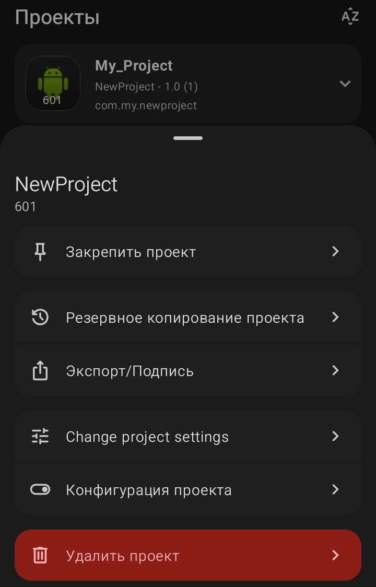

Меню управления проектом (Действия с проектом)

Если нажать на стрелку рядом с названием проекта в общем списке, откроется меню управления. Оно позволяет совершать действия с конкретным проектом, не заходя внутрь него.
·
Закрепить проект:
Эта опция позволяет принудительно переместить выбранный проект в самый верх списка на главном экране приложения. Проект как бы «приклеивается» к верхней части списка и остается там, независимо от того, как давно вы его открывали или какие настройки сортировки установлены.
·
Резервное копирование проекта:
Создает копию вашего проекта в виде файла (обычно в формате .swb или архива). Это очень полезно для сохранения прогресса перед внесением серьезных изменений или для переноса проекта на другое устройство.
·
Экспорт/Подпись:
Здесь происходит компиляция (сборка) вашего проекта в готовый APK-файл, который можно установить на телефон. Здесь же создается цифровая подпись приложения.
·
Change project settings (Настройки проекта):
Открывает окно, где можно изменить название приложения, версию, название пакета, иконку и другие глобальные параметры.
·
Конфигурация проекта:
Здесь настраиваются параметры сборки: минимальная версия Android, разрешения (доступ к интернету, камере и т.д.) и другие технические детали.
·
Удалить проект (красная кнопка):
Полностью удаляет проект с устройства. Будьте осторожны: отменить это действие стандартными средствами нельзя, поэтому делайте резервные копии.
Sketchware Pro 7 · Автор: RasNikGal · © 2026